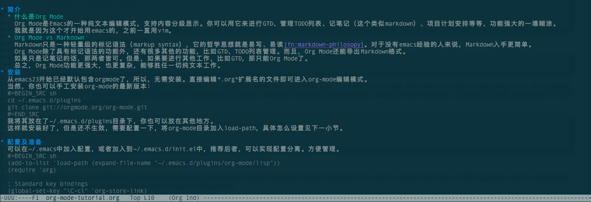

1 简介
1.1 什么是Org Mode
Org Mode是Emacs的一种纯文本编辑模式，支持内容分级显示。你可以用它来进行GTD、管理TODO列表、记笔记（这个类似markdown）、项目计划安排等等，功能强大的一塌糊涂。 我就是因为这个才开始用emacs的，之前一直用vim。
1.2 Org Mode vs Markdown
Markdown只是一种轻量级的标记语法（markup syntax），它的哲学思想就是易写、易读1。对于没有emacs经验的人来说，Markdown入手更简单。 Org Mode除了具有标记语法的功能外，还有很多其他的功能，比如GTD、TODO列表管理。而且，Org Mode还能导出Markdown格式。 如果只是记笔记的话，那两者皆可。但是，如果要进行其他工作，比如GTD，那只能Org Mode了。 总之，Org Mode功能更强大，也更复杂，能够胜任一切纯文本工作。
2 安装
从emacs23开始已经默认包含orgmode了，所以，无需安装。直接编辑*.org*扩展名的文件即可进入org-mode编辑模式。 当然，你也可以手工安装org-mode的最新版本：
cd ~/.emacs.d/plugins
git clone git://orgmode.org/org-mode.git
我将其放在了~/.emacs.d/plugins目录下，你也可以放在其他地方。 这样就安装好了，但是还不生效，需要配置一下，将org-mode目录加入load-path，具体怎么设置见下一小节。
3 配置及准备
可以在~/.emacs中加入配置，或者加入到~/.emacs.d/init.el中，推荐后者，可以实现配置分离。方便管理。
(add-to-list 'load-path (expand-file-name "~/.emacs.d/plugins/org-mode/lisp")) (require 'org) ; Standard key bindings (global-set-key "\C-cl" 'org-store-link) (global-set-key "\C-ca" 'org-agenda) (global-set-key "\C-cc" 'org-capture) (global-set-key "\C-cb" 'org-iswitchb)
好了，现在可以开始org mode之旅了。
emacs test.org

4 TODO列表
5 导出
6 移动app
ksjdkfsjkdf
Footnotes:
1
markdown philosopy: http://daringfireball.net/projects/markdown/syntax#philosophy